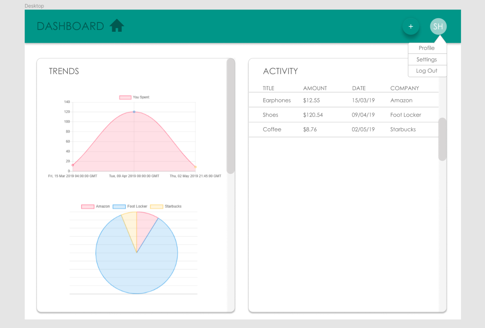
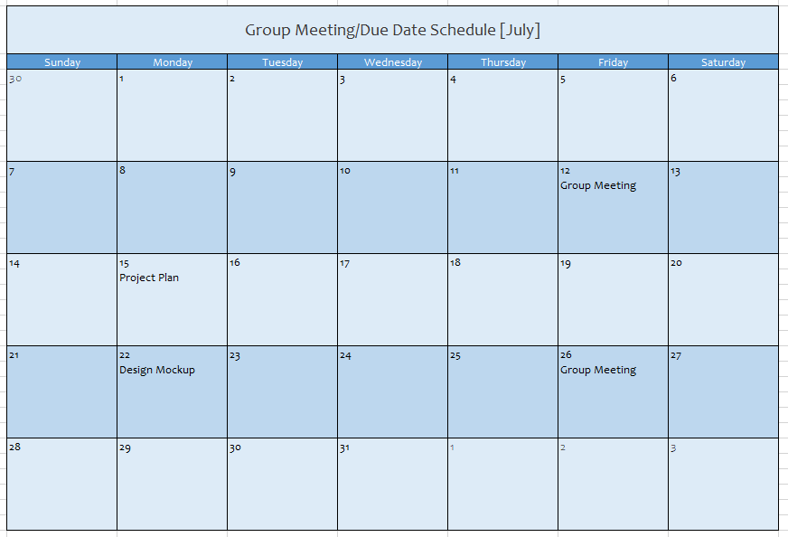
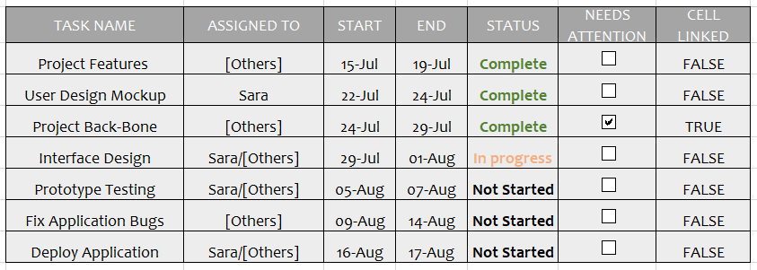

The spending tracker was an idea made by my high school friends and I to create a web app that keeps track of your overall spending using google accounts.
I created the initial mock up design of the web aplication using Figma giving the application its own personal brand.
The skeleton of the web application involved the user adding their recent spending. That input is added into their list of spending and is included in the chart as it is regenerated based on the new information using chart.js plugin.
The user also has the choice to edit, add, delete their existing spending inputs. This helps the user keep their spending up-to-date.
As the product lead, during the recent meeting I brought up the idea in the business requirements excel sheet to allow the user to set their own monthly budget. From that monthly budget, we calculate their monthly spending and generate a gauge chart that shows them whether they are within an ideal range or over their budget.
As the product lead, I was also responsible for creating milestones and project plans for Spending Tracker to keep track of my team's deadlines so that Spending Tracker is always on time for publishing online:
 There are constantly new ideas being added into Spending Tracker application, so be on the lookout for updates!